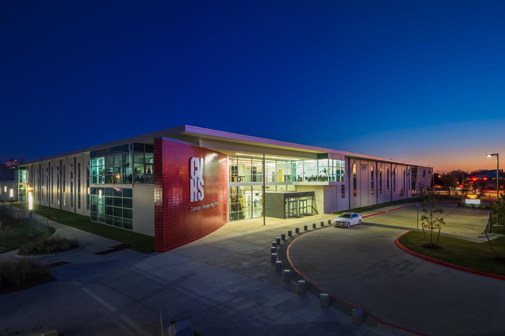

카네기 뱅가드 고등학교(Carnegie Vanguard High School)는 미국 텍사스주 휴스턴에 위치한 명문 공립 마그넷(영재) 고등학교입니다. 휴스턴 독립교육구(HISD)의 대표적인 학업 영재 학교로, 미국 전역 고교 랭킹에서 최상위권에 꾸준히 이름을 올려 텍사스에 거주하는 한국 주재원·이민 가정에서 선호도가 높습니다.
학교 특징
카네기 뱅가드는 영재(gifted & talented) 대상의 소규모 정예 교육과 100% AP 중심 커리큘럼으로 잘 알려져 있습니다. 모든 학생이 다수의 AP 과목을 이수하며, 수학·과학·인문 전반에서 토론·연구·글쓰기 중심의 깊이 있는 학습을 요구합니다. 소규모라 교사와 학생이 가깝게 소통하는 것도 장점입니다.
한국 학생들이 카네기 뱅가드에 진학하는 이유
① 영재 대상 AP 집중 교육으로 명문대 진학에 매우 유리. ② 소규모 정예라 밀착 관리가 가능. ③ 휴스턴 한인 커뮤니티가 잘 형성되어 정착이 수월. 다만 입학 경쟁이 치열하고 학업 강도가 높아, 미국식 수업과 영어에 빠르게 적응하는 것이 관건입니다.
왜 1:1 과외가 필요한가요?
· 수학 과외 — 카네기 뱅가드의 수학은 알지브라·지오메트리 기초에서 프리캘큘러스, AP 미적분·통계로 빠르게 이어집니다. 진도가 앞서가는 만큼 1:1 수학과외로 개념의 빈칸을 그때그때 메워야 상위 과목에서 흔들리지 않습니다.
· 영어 과외 — 원서 리딩과 에세이 라이팅·첨삭, 토론·연구가 내신의 큰 비중을 차지합니다. 영어과외로 논리적 글쓰기와 발표를 훈련하면 내신과 수업 참여가 함께 좋아집니다.
· 과학 과외 — AP 물리·화학·생물을 영어로 소화하려면 개념과 영어 용어를 동시에 잡아야 합니다. 1:1 과학과외로 랩 리포트·시험을 함께 관리하면 좋습니다.
입학·내신 준비
카네기 뱅가드 입학은 성적과 영재 선발 평가가 함께 반영됩니다. 입학을 준비한다면 알지브라·지오메트리 기초와 영어 글쓰기·읽기를 미리 다지는 것이 좋고, 재학 중이라면 화상 수업으로 시차를 맞춰 내신을 관리할 수 있습니다.
정리
카네기 뱅가드 고등학교는 휴스턴의 영재 대상 AP 명문 마그넷 공립고입니다. ① 수학은 기초(알지브라·지오메트리)부터 ② 영어는 에세이·토론 중심으로 ③ 과학은 개념+영어를 함께 준비하는 것이 핵심입니다. 입학 준비든 재학 내신이든, 30분 무료 상담으로 우리 아이 맞춤 계획을 먼저 세워 보세요. 해외에 있어도 화상 수업으로 동일하게 관리합니다.